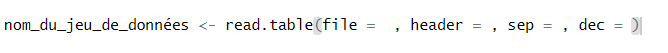

Importation de données en R
Auteur : Christopher
Introduction
Sur cette page web, je vais vous montrer comment importer des données en utilisant du code R, afin d’éviter les erreurs d’importation et de ne pas avoir à réimporter les fichiers à chaque redémarrage de R (particulièrement pratique lors des examens ou des stages).
1. Première étape : localiser le fichier
Ouvre RStudio et crée un nouveau script. Nous allons utiliser une fonction native de R pour importer les données :
read.table().
Ensuite, localise ton fichier à importer et copie son chemin d’accès :

Exemple : C:\TUTORAT\hta.txt.
L’extension .txt indique qu’il s’agit d’un fichier texte.
2. La fonction read.table()

Dans file, place le chemin d’accès copié précédemment.
⚠️ Attention : R ne comprend pas les \, il faut les doubler : \\.

Le paramètre header indique si la première ligne du fichier contient les noms de colonnes.
Utilise TRUE ou FALSE.
Le paramètre sep précise le séparateur de colonnes :
| Format du fichier | sep = | Commentaires |
|---|---|---|
| CSV | "," | Colonnes séparées par des virgules |
| Excel (xls) | ";" | Colonnes séparées par des points-virgules |
| Texte | "\t" ou " " | Tabulations ou espaces |
Pour savoir lequel utiliser, ouvre ton fichier texte : si la sélection bleue s’étend jusqu’à la variable suivante, c’est une tabulation ; sinon ce sont des espaces.

Le paramètre dec indique le séparateur de décimales (. ou ,).
3. Vérification de l’importation
Une fois les paramètres renseignés, exécute ton code (Ctrl + Entrée) et vérifie avec
head() ou str().
Importation réussie